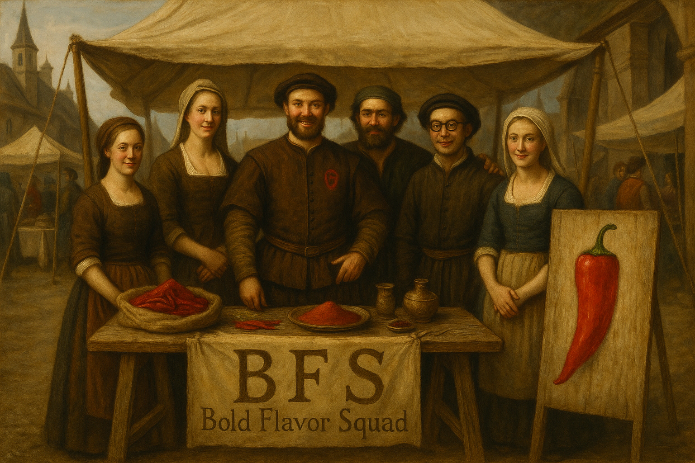
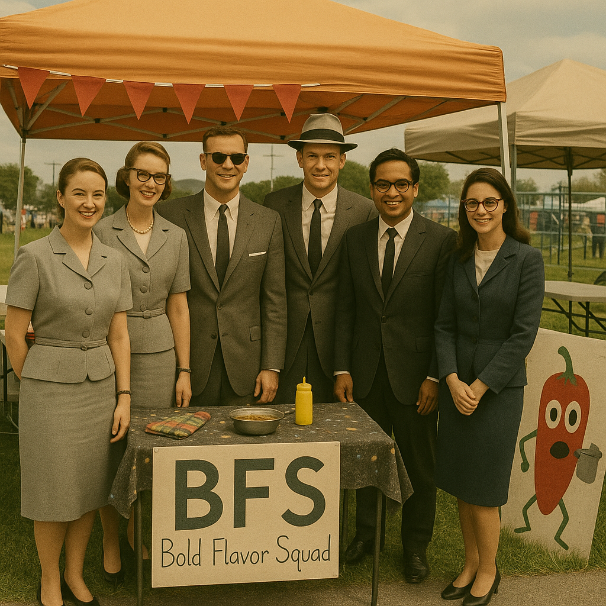

NASA's Backup Flight Software Chili Cook-Off
Welcome to the official home of the Bold Flavor Squad — NASA’s spiciest team in the 2025 Chili Cook-Off!
Fueled by code and capsaicin, we bring the heat from the flight deck to the flavor bowl. Our crew of culinary cosmonauts has blended cosmic spices, solar-hot sauces, and intergalactic beans into the most stellar chili this side of the moon.
Join us as we cook up a storm and shoot for the stars — one bowl at a time. 🌶️🌌
🔥 The Legend of the Bold Flavor Squad 🔥
Ah, the Bold Flavor Squad—known across time not merely as a chili team, but as a culinary brotherhood forged in the fires of ancient spice wars and refined through centuries of flavor mastery...
Chapter I: Origins in the Embered East (circa 200 BCE)

The seeds of the Bold Flavor Squad (BFS) were sown not in a pot of chili, but in the windswept dunes of the ancient spice routes... From his teachings, and the oral flavor scrolls passed between generations, the philosophy of the BFS began to simmer.
Chapter II: The Chili Crusades and the Western Expansion (12th–16th centuries)
When chilies first arrived from the New World, the world changed. The rediscovery of capsicum annuum transformed ancient recipes... sharing spice techniques and secretly influencing royal kitchens across Europe.
Chapter III: The Golden Era of Competitive Chili (1950s–1990s)
Fast-forward to the 20th century. In the post-war boom of the American Southwest, chili competitions flourished like desert flowers after rain... Their flagship dish, The Crimson Reckoning, was whispered about in reverent tones.
Chapter IV: The Modern Enigma (2000–Present)

Though the squad has continued to produce the most flavorful, complex, and soul-stirring chili, they have not secured a first-place win since 2007. Theories abound... Yet, the Squad remains undeterred, competing not for trophies, but for the soul of chili itself.
🌶️🔥 Long live the Bold Flavor Squad! 🔥🌶️